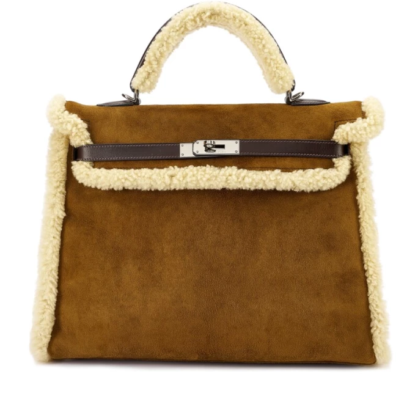
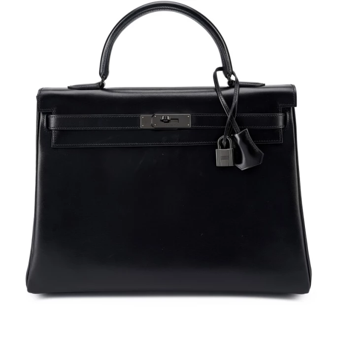
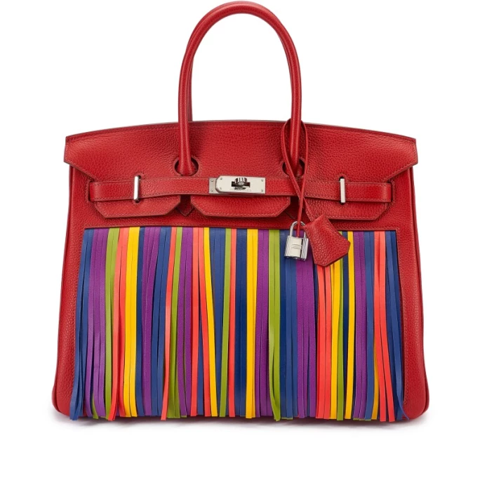
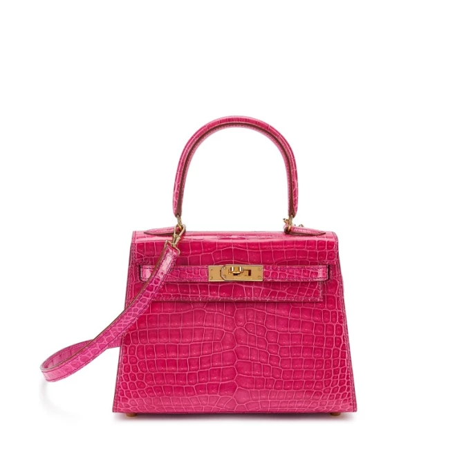
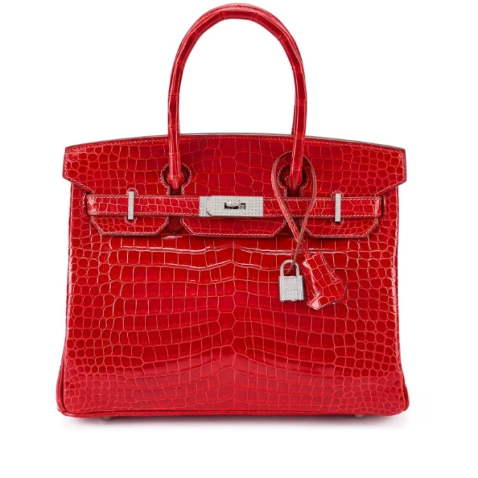
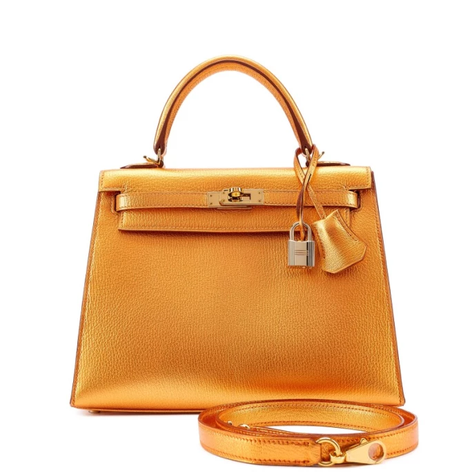

譯自 徐倩怡 · Sotheby's Hong Kong · 2023年1月27日
「收藏之道：劉鑾雄珍藏絕品手袋」第一部分即將隆重推出，我們藉此機會，回顧過去 20 年的手袋發展史。
手袋比任何潮流單品都能彰顯時代精神，呈現出特定時代的時尚潮流和生活品味，可說是時尚界中最不可或缺、也是最實用的配飾。
「收藏之道：劉鑾雄珍藏絕品手袋」第一部分網上專場將於 1 月 30 日至 2 月 9 進行，率先欣呈 77 件珍藏絕品。拍賣第二部分於同年 7 月舉行。
本拍賣所得收益將捐出作慈善用途。
「劉鑾雄先生獨具慧眼，收藏的手袋都是難求的珍品，當中的限量版都是過去二十年來極具代表性的款式。」
夏蓮美 Morgane Halimi，環球手袋及配飾部主管
現在讓我們一起回顧現代手袋的發展歷程，其中不少款式都標誌著過去二十年來手袋設計的重要里程碑。
向時尚致敬
貴為時尚界的傳奇人物，尚・保羅・高緹耶（Jean-Paul Gaultier）在時尚界和愛馬仕（Hermès）藏家心目中地位超然。這位法國設計師在 2004 年至 2010 年擔任愛馬仕創意總監，期間不斷顛覆傳統，重新演繹愛馬仕的經典設計。
接下來介紹的限量版手袋只曾在時裝表演上亮相，早已停產，可稱得上愛馬仕迷們夢寐以求的逸品。多年來，高緹耶的創新設計不斷見證著時尚界的重要時刻，而劉鑾雄先生極具眼光，將之一一收入囊中。
限量版Shearling羊毛皮Teddy 35 公分凱莉包

愛馬仕 | 限量版烏木色Box小牛皮，麂皮及Shearling羊毛Teddy35公分Retourne內縫凱莉包，配鍍鈀金屬件，2005年 | 估價 150,000 - 260,000 港元
這款凱莉包由高緹耶操刀設計，2005 年首次亮相。Shearling Teddy凱莉包以棕褐色麂皮和羊毛皮製成，洋溢冬日暖意，感覺愜意溫馨。烏木色 Barenia 小牛皮裝飾亦令這款限量版手袋更見經典優雅。
限量版 So Black 系列 黑色35 公分凱莉包

愛馬仕 | 限量版So Black 系列黑色Box小牛皮35公分Retourne內縫凱莉包，配黑色PVD 電鍍金屬件，2010年 | 估價 150,000 - 260,000 港元
高緹耶為愛馬仕效力的最後一個舞台是 2010 年的秋季時裝表演，當時 So Black 系列首次登場，PVD 電鍍技術令手袋的配件呈現全黑效果，時髦別緻。這個簡單的小變動重塑了經典的柏金包設計，卻不改品牌美學。
多色流蘇 35 公分柏金包

愛馬仕 | 茜草红色Clemence牛皮拼多色Fringe流蘇35公分柏金包，具愛馬仕定製馬蹄印，配鍍鈀金屬件，2009年 | 估價 150,000 - 260,000 港元
流蘇柏金包是市場上極罕見的限量版手袋，這個款式亦是當年根據客戶的要求定制，是手袋收藏界金字塔的頂端。手袋上的流蘇模仿馬毛，象徵愛馬仕與馬術的淵源。
擁抱經典設計
20 公分迷你凱莉包一代

愛馬仕 | 玫瑰糖果色亮面灣鱷皮小牛皮20公分迷你凱莉包一代，配鍍金金屬件，1997年 | 估價 300,000 - 500,000 港元
20 公分凱莉包在 1957 年面世，當時配中長肩帶。手袋頂部的經典圓形手柄在 1980 年才出現，藏家往往稱之為「手鐲手柄」。
這次上拍的是1997 年粉紅色亮面 Porosus 灣鱷皮 20 公分迷你凱莉包一代，配鍍金金屬件，保存狀況極佳。這款手袋歷年來不斷進化，迷你凱莉包一代更見彌足珍貴，至今在手袋市場上仍一直備受追捧。
手袋也可以閃閃生輝
鑽石柏金包

愛馬仕 | 法拉利紅色亮面灣鱷皮30公分柏金包，配鑽石拼18K白金金屬件，2008年 | 估價 500,000 - 700,000 港元
鑽石柏金包是名副其實的收藏級珍品。這次上拍有六款鑽石柏金包，尺寸和顏色各異，配鑲鑽的 18k 白金金屬件，矚目耀眼。
至於這款 30 公分柏金包，單是鎖頭就別具派頭。鎖頭以約 68.4 克的 18k 白金製成，鑲有 40 顆圓形明亮式切割白鑽，而柏金包的招牌旋鎖（Touret）、金屬條（Pontets）和金屬牌（Plaques de Sanglons）亦鑲嵌超過 200 顆鑽石，共重約 10 克拉。
限量版金屬古銅色 25 公分凱莉包

愛馬仕 | 限量版金屬古銅色Chèvre山羊皮25公分Sellier外縫凱莉包，配鍍金金屬件，2005年 | 估價 400,000 - 600,000 港元
Metallic金屬系列僅在 2004 年和 2005 年限量生產，極為稀有。在製作過程中，工匠用人手染色，將金屬的色素染到皮革上，直至皮革的質地產生變化。手袋的靈感源自Leïla Menchari 為愛馬仕旗艦店設計的櫥窗。推出將近二十年，這次上拍的金屬系列手袋狀況仍然極佳，非常難得。
在過去十年，只有六款金屬柏金包和凱莉包曾在拍賣場上出現，可見它在市場上的罕見程度。最近期成交的Metallic金屬系列手袋2022 年 4 月在香港蘇富比售出，成交價高達107 萬港元。